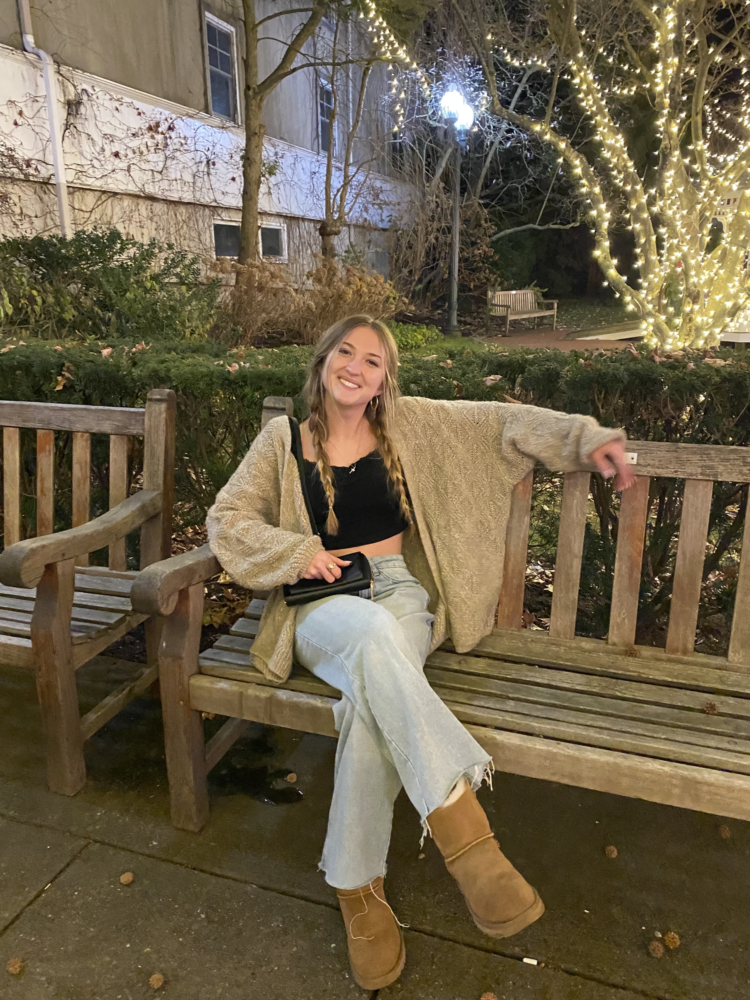

- 
Mary Kate Griffin
Photographer/Student
Hello! My name is Mary Kate Griffin and I have been taking pictures since I was young. I started getting serious about my hobby once I got into high school. I have promoted my photos via Instagram and other social media platforms, and have sold many photos to people. I take pictures for different sporting events, and am a Photo Editor for the NASH Yearbook. I am a senior at North Allegheny Senior High School and plan to further my photography aspirations in college.